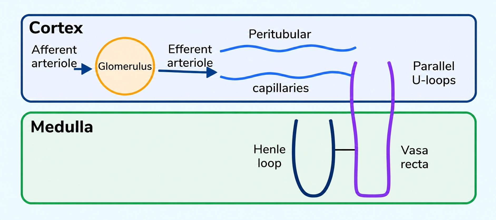
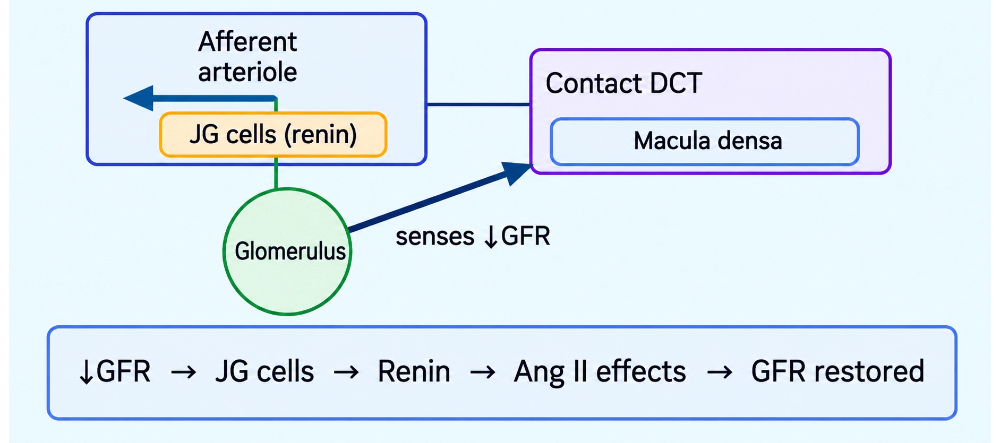

Biology
Excretory Products and Their Elimination
What counts as waste, what types exist, and why toxicity decides water need
EXCRETORY WASTES OVERVIEW
📖Definition & Introduction
- Excretory products are substances accumulating due to metabolic activities and/or excess intake that must be removed to maintain internal balance.
- Major waste classes: nitrogenous wastes, CO2, excess water, and excess ions (Na+, K+, Cl−, etc.).
- Core exam logic: higher toxicity ⇒ more urgent removal and typically more water needed to excrete safely.
- Water availability and habitat strongly influence the main nitrogenous waste produced by an animal.
- Excretion is not only "urine": lungs, skin, and liver also remove wastes (CO2, water, salts, bile pigments).
🖼️Diagram
🎯Key Concepts
- 🧪Nitrogenous wastes: ammonia, urea, uric acid (major forms in animals).
- ☠️Relative toxicity: ammonia (most) > urea > uric acid (least).
- 💧Water need for excretion: ammonia (maximum) > urea > uric acid (minimum).
- 🌊Aquatic animals often excrete ammonia due to easy dilution and diffusion into water.
- 🏜️Terrestrial adaptation favors urea/uric acid to conserve water while reducing toxicity.
- 🫁CO2 is a respiratory waste eliminated mainly via lungs (or gills in aquatic forms).
🔎NITROGENOUS WASTES: WHY 3 FORMS EXIST
- Ammonia: highly toxic but very soluble; can diffuse out fast when plenty of water is available.
- Urea: less toxic; formed by conversion of ammonia in liver; excreted mainly by kidneys in mammals.
- Uric acid: least toxic; excreted as paste/pellets; ideal for severe water conservation.
- Therefore, terrestrial life trends toward urea/uric acid to reduce water loss.
⚙️NON-NITROGENOUS WASTES (ALSO TESTED)
- CO2: respiratory waste; removed largely by lungs; build-up disturbs acid–base balance.
- Excess water: must be eliminated/regulated to keep blood volume and osmolarity stable.
- Ions (Na+, K+, Cl−, phosphate, sulphate): regulated for osmotic balance and pH.
- Sweat removes some NaCl plus traces of urea; primary role is cooling (thermoregulation).
⚖️Ammonia vs Urea vs Uric Acid (toxicity & water logic)
| Basis | Ammonia | Urea | Uric acid |
|---|---|---|---|
| Relative toxicity | Highest | Intermediate | Lowest |
| Water needed for excretion | Maximum | Moderate | Minimum |
| General habitat fit | Aquatic (easy dilution) | Terrestrial possible | Dry terrestrial / egg-layers |
| Typical examples | Bony fishes; aquatic amphibians; aquatic insects | Mammals; many terrestrial amphibians; marine fishes | Reptiles; birds; land snails; insects |
| Exam note | Often by diffusion via body/gill surfaces | Made in liver; excreted by kidneys | Excreted as paste/pellets; saves water |
✏️Solved Q&A
1
Why are ammonotelic animals mostly aquatic, while many terrestrial animals are ureotelic/uricotelic?
Answer:
Ammonia is most toxic, so it must be removed quickly and safely.
Its safe elimination needs large amounts of water for dilution; aquatic habitats provide this continuously.
Terrestrial habitats restrict water availability, so less toxic wastes (urea/uric acid) are favored to conserve water.
Ammonia is most toxic, so it must be removed quickly and safely.
Its safe elimination needs large amounts of water for dilution; aquatic habitats provide this continuously.
Terrestrial habitats restrict water availability, so less toxic wastes (urea/uric acid) are favored to conserve water.
✓ Aquatic life supports ammonia excretion due to high water availability; terrestrial life shifts to urea/uric acid for lower toxicity and water conservation.
2
Insects are listed as both ammonotelic and uricotelic in different contexts. Explain.
Answer:
Waste form depends on water availability and lifestyle, not just the taxon name.
Many aquatic insects can excrete ammonia because water is abundant.
Most terrestrial insects excrete uric acid as paste/pellets to minimize water loss.
Waste form depends on water availability and lifestyle, not just the taxon name.
Many aquatic insects can excrete ammonia because water is abundant.
Most terrestrial insects excrete uric acid as paste/pellets to minimize water loss.
✓ Aquatic insects tend to be ammonotelic; terrestrial insects are typically uricotelic due to stronger water conservation needs.
⭐Important Points
- Definition must include: metabolic activities/excess ingestion and need to maintain internal balance.
- Major excretory wastes: NH3/urea/uric acid, CO2, water, ions (Na+, K+, Cl−).
- High-yield order: toxicity NH3 > urea > uric acid; water requirement follows same direction.
- Terrestrial adaptation is strongly linked to producing less toxic nitrogenous wastes to conserve water.
- Do not only list examples; always attach the reason: toxicity and water availability.
💡Memory Technique
“Mnemonic: A-U-U (Toxicity & Water go together)”
📌Quick Recap
Excretory products = metabolic/excess substances that must be removed to maintain homeostasis.Major wastes: nitrogenous (NH3, urea, uric acid), CO2, excess water, excess ions (Na+, K+, Cl−).Toxicity order: NH3 > urea > uric acid.Water requirement order: NH3 > urea > uric acid.Ammonotelism/ureotelism/uricotelism = excretion mainly as ammonia/urea/uric acid.Key link: terrestrial adaptation favors urea/uric acid for water conservation.
Nitrogenous wastes: toxicity vs water need → aquatic to terrestrial adaptation
AMMONOTELISM • UREOTELISM • URICOTELISM
📖Definition & Introduction
- Ammonotelism: excretion of nitrogenous waste mainly as ammonia (NH3).
- Ureotelism: excretion mainly as urea (formed from ammonia in liver).
- Uricotelism: excretion mainly as uric acid, usually as paste/pellets.
- Core exam logic: toxicity NH3 (highest) > urea > uric acid (lowest).
- Core exam logic: water needed NH3 (maximum) > urea > uric acid (minimum).
- Terrestrial adaptation favored urea/uric acid for water conservation.
🖼️Diagram
🎯Key Concepts
- WATEMore water available (aquatic) → can afford ammonia; less water (terrestrial) → urea/uric acid.
- TOXINH3 is most toxic, so it must be eliminated quickly and diluted heavily.
- PATHUrea: NH3 converted to urea in liver → blood → kidney excretion.
- WATEUric acid excretion as paste/pellets minimizes water loss; suits birds/reptiles and many insects.
- EXAMExam trap: insects appear in both lists—aquatic insects often ammonotelic; terrestrial insects typically uricotelic.
🔎WHO EXCRETES WHAT (HIGH-YIELD LISTS)
- Ammonotelic: many bony fishes, aquatic amphibians, aquatic insects.
- Ureotelic: mammals, many terrestrial amphibians, marine fishes.
- Uricotelic: reptiles, birds, land snails, insects (mostly terrestrial).
- Insects trap: write habitat with insects—aquatic insects ≈ ammonotelic; terrestrial insects ≈ uricotelic.
⚙️ELIMINATION: WHY EACH TYPE IS ADVANTAGEOUS
- Ammonia: readily soluble; removed fast by diffusion across body/gills; needs lots of water.
- Ammonotelic: ammonia is mainly eliminated through body surface/gills; kidneys play no significant role in ammonia removal.
- Urea: less toxic than NH3; liver converts NH3 → urea; kidneys excrete via urine.
- Some animals can retain some urea in kidney matrix to help maintain desired osmolarity (supports water balance).
- Uric acid: least toxic; excreted as semi-solid paste/pellets → minimum water loss.
⚖️Ammonotelism vs Ureotelism vs Uricotelism (Exam Comparison)
| Basis | Ammonotelism | Ureotelism | Uricotelism |
|---|---|---|---|
| Main waste | Ammonia (NH3) | Urea | Uric acid |
| Relative toxicity | Highest | Intermediate | Lowest |
| Water needed for excretion | Maximum | Moderate | Minimum |
| Typical physical form | Dissolved in lots of water | Dissolved in urine | Paste/pellets |
| Key examples | Bony fishes; aquatic amphibians; aquatic insects | Mammals; many terrestrial amphibians; marine fishes | Reptiles; birds; land snails; insects |
| Core advantage | Cheap to produce; rapid removal in water-rich habitat | Less toxic; suits moderate water availability | Best water conservation; safe with low toxicity |
✏️Solved Q&A
1
A question states: "Insects are ammonotelic." Is this always correct? Explain with habitat and give the correct exam-ready statement.
Answer:
It is not always correct because insects occur in both categories depending on habitat.
Aquatic insects often excrete nitrogen mainly as ammonia (water is available to dilute it).
Most terrestrial insects excrete nitrogen mainly as uric acid to conserve water.
It is not always correct because insects occur in both categories depending on habitat.
Aquatic insects often excrete nitrogen mainly as ammonia (water is available to dilute it).
Most terrestrial insects excrete nitrogen mainly as uric acid to conserve water.
✓ Exam-ready: Aquatic insects are often ammonotelic, while (mostly) terrestrial insects are uricotelic.
2
Why is uricotelism considered a strong terrestrial adaptation compared to ammonotelism? Link to both toxicity and water conservation.
Answer:
Ammonia is highly toxic, so it must be eliminated quickly in a large volume of water.
On land, water is limited; eliminating ammonia would cause dangerous dehydration.
Uric acid is least toxic and is excreted as paste/pellets, so minimum water is lost.
Ammonia is highly toxic, so it must be eliminated quickly in a large volume of water.
On land, water is limited; eliminating ammonia would cause dangerous dehydration.
Uric acid is least toxic and is excreted as paste/pellets, so minimum water is lost.
✓ Uricotelism is terrestrial adaptation because uric acid is least toxic and can be excreted with minimum water loss.
⭐Important Points
- Order to remember: toxicity NH3 > urea > uric acid.
- Order to remember: water requirement NH3 > urea > uric acid.
- Ammonotelic animals often excrete NH3 mainly by diffusion across body/gills; kidneys are not the main route for NH3 removal.
- Ureotelic pathway: NH3 converted to urea in liver → carried in blood → excreted by kidneys.
- Uricotelic excretion occurs as paste/pellets → best for water conservation.
💡Memory Technique
“Mnemonic: A-U-U with water logic”
📌Quick Recap
Ammonotelism: nitrogen waste mainly as NH3; most toxic; maximum water needed; excreted mainly by diffusion across body surface/gills.Ureotelism: nitrogen waste mainly as urea; ammonia converted to urea in liver; urea carried in blood and excreted by kidneys.Uricotelism: nitrogen waste mainly as uric acid; least toxic; excreted as paste/pellets; minimum water loss.Examples: ammonotelic (many bony fishes, aquatic amphibians, aquatic insects); ureotelic (mammals, many terrestrial amphibians, marine fishes); uricotelic (reptiles, birds, land snails, insects).Exam trap: aquatic insects → ammonotelic; terrestrial insects → uricotelic.
Survey of protonephridia, nephridia, Malpighian tubules & green glands with examples + functions
EXCRETORY ORGANS IN INVERTEBRATES
📖Definition & Introduction
- Invertebrate excretion uses simple tubular organs to remove nitrogenous wastes and regulate water–ion balance.
- Protonephridia (flame cells) mainly do osmoregulation in flatworms/rotifers (also present in Amphioxus).
- Nephridia in annelids remove nitrogenous wastes and maintain fluid + ionic balance.
- Malpighian tubules in insects excrete nitrogenous wastes and aid osmoregulation; important for water conservation in terrestrial life.
- Antennal/green glands are excretory organs of crustaceans like prawn.
- Exam skill: match organ ↔ phylum/example ↔ main role (waste removal vs osmoregulation).
🖼️Diagram
🎯Key Concepts
- 🔥Flame cells: ciliary beating drives fluid into tubules; major role is water/ion regulation.
- 🪱Nephridia: segmentally arranged tubules in annelids; excretion plus osmoregulation.
- 🪳Malpighian tubules: blind tubules opening into gut; wastes enter tubules and leave via hindgut.
- 🦐Green (antennal) glands: crustacean excretory organs located near antennae.
- 🔁Many invertebrate excretory organs also maintain internal homeostasis (water + ions).
🔎MATCH THE ORGAN WITH THE EXAMPLE (high-yield)
- Protonephridia / flame cells → Platyhelminthes: Planaria; also rotifers, some annelids, Amphioxus.
- Nephridia → Annelida: earthworm.
- Malpighian tubules → Insecta: cockroach (most insects).
- Antennal/green glands → Crustacea: prawn.
⚙️WHAT EACH ORGAN MAINLY DOES (function focus)
- Protonephridia: primarily ionic + fluid volume regulation (osmoregulation).
- Nephridia: nitrogenous waste removal + maintenance of fluid and ionic balance.
- Malpighian tubules: nitrogenous waste removal + osmoregulation; supports water conservation in terrestrial insects.
- Green glands: crustacean excretory organs; perform excretion and aid internal balance.
⚖️PROTONEPHRIDIA vs NEPHRIDIA vs MALPIGHIAN TUBULES vs GREEN (ANTENNAL) GLANDS
| Basis | Protonephridia (flame cells) | Nephridia | Malpighian tubules |
|---|---|---|---|
| Typical groups | Platyhelminthes, rotifers; some annelids; Amphioxus | Annelida | Most insects |
| NCERT-style example | Planaria | Earthworm | Cockroach |
| Main role (primary) | Mostly osmoregulation (ionic + fluid volume regulation) | Excretion + fluid/ionic balance | Excretion + osmoregulation (water conservation on land) |
| Key identifier | Flame cells (ciliated) drive fluid into tubules | Segmentally arranged tubular nephridia | Blind tubules opening into gut |
✏️Solved Q&A
1
A question lists: Planaria, earthworm, cockroach, prawn. Match each with its excretory organ.
Answer:
Use the standard example pairs: Planaria → flame cells, earthworm → nephridia, cockroach → Malpighian tubules, prawn → green (antennal) glands.
Write organ names (not nitrogenous waste types) unless the question asks waste form.
Use the standard example pairs: Planaria → flame cells, earthworm → nephridia, cockroach → Malpighian tubules, prawn → green (antennal) glands.
Write organ names (not nitrogenous waste types) unless the question asks waste form.
✓ Planaria—protonephridia (flame cells); earthworm—nephridia; cockroach—Malpighian tubules; prawn—antennal/green glands.
2
Why are protonephridia (flame cells) said to be mainly osmoregulatory rather than only excretory?
Answer:
Ciliary action in flame cells drives movement of body fluid into tubules, helping control fluid volume.
This process supports selective handling of ions with water, maintaining ionic balance.
Therefore, their major emphasis is water–ion regulation, along with removal of some wastes.
Ciliary action in flame cells drives movement of body fluid into tubules, helping control fluid volume.
This process supports selective handling of ions with water, maintaining ionic balance.
Therefore, their major emphasis is water–ion regulation, along with removal of some wastes.
✓ Because flame-cell tubules primarily regulate body fluid volume and ion balance (osmoregulation), not only nitrogenous waste removal.
⭐Important Points
- Write examples exactly: Planaria—flame cells, earthworm—nephridia, cockroach—Malpighian tubules, prawn—green glands.
- Protonephridia occur in Platyhelminthes and rotifers; Amphioxus also shows protonephridia.
- Most invertebrate excretory organs are simple tubular structures (contrast: vertebrate kidneys).
- Many organs do both excretion and osmoregulation; memorize the primary role commonly stated for each.
- Do not confuse Malpighian tubules (insects) with Malpighian body/corpuscle (renal corpuscle of human nephron).
💡Memory Technique
“Mnemonic: PECP (Planaria–Earthworm–Cockroach–Prawn)”
📌Quick Recap
Protonephridia (flame cells): Platyhelminthes (Planaria), rotifers, Amphioxus; primary role = osmoregulation (ionic + fluid volume regulation).Nephridia: annelids (earthworm); remove nitrogenous wastes and maintain fluid/ionic balance.Malpighian tubules: most insects (cockroach); excretion + osmoregulation; open into gut.Antennal/green glands: crustaceans (prawn); excretory organs near antennae.Exam trap: Malpighian tubules (insect organ) ≠ Malpighian body/corpuscle (human renal corpuscle).
Organs of urine pathway + kidney position and internal regions (cortex–medulla–pelvis)
HUMAN URINARY SYSTEM
📖Definition & Introduction
- Human urinary (excretory) system removes nitrogenous wastes and regulates water–ion balance via urine formation.
- Main components: kidneys (urine formation), ureters (transport), urinary bladder (storage), urethra (voiding).
- Kidneys are reddish-brown, bean-shaped organs on the dorsal abdominal wall.
- Each kidney has a concave medial border with a hilum where ureter, blood vessels and nerves enter/leave.
- Internally, kidney shows cortex (outer) and medulla (inner) with pyramids opening into calyces and pelvis.
🖼️Diagram
🎯Key Concepts
- 🫘Kidney position: between last thoracic and third lumbar vertebrae, close to dorsal inner abdominal wall.
- 📏Adult kidney size: 10–12 cm long, 5–7 cm wide, 2–3 cm thick; mass 120–170 g.
- 🚪Hilum: medial notch; passage for renal artery/vein, ureter and nerves.
- 🧱Capsule: tough outer covering of kidney.
- 🟦Cortex is the outer granular zone; sends extensions inward between pyramids.
- 🔺Medulla is divided into conical medullary pyramids projecting into calyces.
🔎ORGANS: WHAT EACH DOES
- Kidneys: filter blood and form urine; maintain water, electrolyte and acid–base balance.
- Ureters: muscular tubes carrying urine from renal pelvis to urinary bladder.
- Urinary bladder: distensible muscular sac for temporary urine storage.
- Urethra: carries urine outside; controlled by sphincters during micturition.
⚙️KIDNEY: EXTERNAL FEATURES & INTERNAL REGIONS
- Capsule covers kidney; medial concave side bears hilum (entry/exit point).
- Cortex is outer zone; medulla is inner zone arranged as pyramids.
- Pyramids project into calyces; calyces open into renal pelvis (funnel).
- Columns of Bertini are cortical extensions between pyramids (not pelvis structures).
⚖️Cortex vs Medulla (Kidney)
| Basis | Cortex | Medulla |
|---|---|---|
| Position | Outer zone under capsule | Inner zone |
| Major structures | Renal columns (between pyramids) | Medullary pyramids (conical) |
| Relation to pelvis | Does not form pelvis | Pyramids project toward calyces |
| Exam cue | Columns of Bertini are cortex | Pyramids are medulla |
✏️Solved Q&A
1
A student says: "Calyx is the main cavity of the kidney and renal pelvis are its projections." Correct the statement with proper terms.
Answer:
Identify the cavity: renal pelvis is the broad funnel-shaped space inner to the hilum.
Identify the projections: calyces are cup-like projections from the renal pelvis that receive urine from pyramid tips.
Identify the cavity: renal pelvis is the broad funnel-shaped space inner to the hilum.
Identify the projections: calyces are cup-like projections from the renal pelvis that receive urine from pyramid tips.
✓ Renal pelvis is the main funnel-shaped cavity; calyces are its projections.
2
During a viva, you are asked to trace the urine path from kidney to outside and mention the entry/exit notch of kidney.
Answer:
Urine formed in kidney collects into calyces → renal pelvis.
Renal pelvis continues as ureter → urine stored in urinary bladder → passes out via urethra.
The notch on medial concave surface is the hilum (for ureter, vessels, nerves).
Urine formed in kidney collects into calyces → renal pelvis.
Renal pelvis continues as ureter → urine stored in urinary bladder → passes out via urethra.
The notch on medial concave surface is the hilum (for ureter, vessels, nerves).
✓ Calyces → renal pelvis → ureter → urinary bladder → urethra; kidney notch is the hilum.
⭐Important Points
- Kidneys lie between last thoracic and third lumbar vertebrae on dorsal abdominal wall.
- Hilum is on the inner concave side; it transmits ureter, blood vessels and nerves.
- Two zones: cortex (outer) and medulla (inner).
- Medulla forms pyramids that project into calyces.
- Renal pelvis is a funnel-shaped cavity/space; calyces are its projections.
💡Memory Technique
“Mnemonic: "K-U-B-U" + "CoMe-PyCo-PeCa"”
📌Quick Recap
Components: kidneys (form urine), ureters (carry), urinary bladder (store), urethra (release).Kidney position: between last thoracic and third lumbar vertebrae; close to dorsal inner abdominal wall.Hilum: notch on inner concave side; ureter, blood vessels and nerves pass through it.Renal pelvis: broad funnel-shaped space inner to hilum; continues as ureter.Calyces: cup-like projections from renal pelvis that receive urine from medullary pyramids.Internal zones: cortex (outer) and medulla (inner). Columns of Bertini are cortical extensions between pyramids.
Functional unit of kidney: renal corpuscle + tubular system; cortical vs juxtamedullary types
NEPHRON STRUCTURE
📖Definition & Introduction
- Nephron is the functional unit of kidney; ~one million nephrons per kidney.
- Each nephron has renal corpuscle (glomerulus + Bowman’s capsule) and renal tubule.
- Renal corpuscle is also called Malpighian body.
- Most corpuscles and convoluted tubules lie in cortex; Henle’s loop dips into medulla.
🖼️Diagram
🎯Key Concepts
- 🩸Glomerulus = tuft of capillaries formed by afferent arteriole; drained by efferent arteriole.
- 🫙Bowman’s capsule = double-walled cup enclosing glomerulus; start of renal tubule.
- 🧬Renal corpuscle = glomerulus + Bowman’s capsule (high-yield naming).
- 🧵PCT and DCT are highly coiled; Henle’s loop is hairpin with descending & ascending limbs.
- 🚰Collecting duct receives DCTs of many nephrons; drains toward renal pelvis via pyramids/calyces.
- 🧭Cortical nephrons: short loop; juxtamedullary nephrons: long loop deep in medulla.
🔎RENAL CORPUSCLE (MALPIGHIAN BODY)
- Glomerulus = capillary tuft; blood enters via afferent arteriole and leaves via efferent arteriole.
- Bowman’s capsule = double-walled, cup-like; encloses glomerulus and collects filtrate.
- Renal corpuscle is located in cortex; start point for urine formation steps.
⚙️RENAL TUBULE PATHWAY + REGIONAL LOCATION
- PCT follows Bowman’s capsule; DCT continues from ascending limb of Henle’s loop.
- Cortex: renal corpuscle, PCT, DCT; Medulla: Henle’s loop mainly; collecting duct runs cortex to inner medulla.
⚖️Cortical vs Juxtamedullary Nephrons
| Basis | Cortical nephron | Juxtamedullary nephron |
|---|---|---|
| Proportion | Majority | Some (minority) |
| Corpuscle position | Outer cortex | Near cortex–medulla junction |
| Henle’s loop length | Short; extends little into medulla | Very long; runs deep into medulla |
| Vasa recta | Absent or highly reduced | Well developed (with long loops) |
| Key structural significance | Mainly cortical processing | Supports medullary mechanisms for concentration |
✏️Solved Q&A
1
An exam asks: “Name the Malpighian body and mention its components.” What should you write?
Answer:
Recall synonym: Malpighian body = renal corpuscle.
State components precisely: glomerulus + Bowman’s capsule.
Recall synonym: Malpighian body = renal corpuscle.
State components precisely: glomerulus + Bowman’s capsule.
✓ Malpighian body (renal corpuscle) consists of the glomerulus and Bowman’s capsule.
2
A student says: “Blood leaves the glomerulus through the afferent arteriole and enters through efferent arteriole.” Correct the statement with reasoning.
Answer:
Use naming logic: afferent means “bringing in”; efferent means “carrying away”.
Therefore, blood enters glomerulus via afferent arteriole and leaves via efferent arteriole.
Use naming logic: afferent means “bringing in”; efferent means “carrying away”.
Therefore, blood enters glomerulus via afferent arteriole and leaves via efferent arteriole.
✓ Blood enters the glomerulus through the afferent arteriole and leaves through the efferent arteriole.
⭐Important Points
- Each kidney has nearly one million nephrons (standard NCERT line).
- Renal corpuscle = glomerulus + Bowman’s capsule; also called Malpighian body.
- Arteriolar flow: afferent → glomerulus → efferent (direction is frequently tested).
- Cortex contains corpuscle, PCT, DCT; loop of Henle extends into medulla.
💡Memory Technique
“Mnemonic: B-PeH-D-Co (Tubule order)”
📌Quick Recap
Nephron = functional unit; ~one million per kidney.Renal corpuscle (Malpighian body) = glomerulus + Bowman’s capsule.Blood flow: afferent arteriole → glomerulus → efferent arteriole.Cortex: corpuscle, PCT, DCT; Medulla: Henle’s loop; collecting duct traverses to inner medulla.Cortical nephron: short loop, vasa recta reduced; Juxtamedullary nephron: long loop deep medulla.
How efferent arterioles form renal tubule capillaries and support Henle’s loop (counter-current)
RENAL BLOOD SUPPLY FEATURES: PERITUBULAR CAPILLARIES & VASA RECTA
📖Definition & Introduction
- Peritubular capillaries are the fine capillary network formed from the efferent arteriole around renal tubules.
- Vasa recta are specialised straight vessels of the peritubular network that run parallel to Henle’s loop.
- Vasa recta show a U-shaped (hairpin) course in the medulla, matching the U-shape of Henle’s loop.
- Their close proximity and counter-current blood flow help preserve the medullary osmotic gradient needed for the concentrating mechanism.
- In cortical nephrons, vasa recta are absent or highly reduced; they are prominent in juxtamedullary nephrons.
🖼️Diagram

🎯Key Concepts
- 🔁Afferent arteriole → glomerulus → efferent arteriole → peritubular capillaries (second capillary bed).
- 🧵Peritubular capillaries closely surround PCT/DCT to pick up reabsorbed water and solutes.
- 🧊Vasa recta descend into medulla and ascend back, forming a U-loop alongside Henle’s loop.
- 🧭Blood flow in descending vs ascending limbs of vasa recta is opposite: a counter-current pattern.
- 🏔️Juxtamedullary nephrons (long Henle) have well-developed vasa recta to support medullary gradient.
- 🌤️Cortical nephrons (short Henle) show reduced/absent vasa recta; mainly cortical peritubular network.
🔎FORMATION: FROM EFFERENT ARTERIOLE TO TWO CAPILLARY PATTERNS
- After glomerulus, the efferent arteriole breaks into a peritubular capillary network.
- Around PCT/DCT (cortex) it forms dense, tortuous capillaries for rapid exchange with tubule.
- In nephrons with long Henle (mainly juxtamedullary), some peritubular vessels form straight vasa recta.
- Vasa recta descend and ascend in medulla, forming a hairpin that mirrors Henle’s loop.
⚙️ASSOCIATION WITH HENLE’S LOOP: WHY VASA RECTA MATTER
- Vasa recta lie parallel to Henle’s loop, keeping blood close to the medullary interstitium.
- Counter-current blood flow in vasa recta helps preserve the medullary osmotic gradient (counter-current support).
- This support is strongest in juxtamedullary nephrons (deep medulla, long loop).
- In cortical nephrons, vasa recta are absent/highly reduced because Henle’s loop is short and shallow.
⚖️Cortical vs Juxtamedullary Nephrons (Blood Supply Focus)
| Basis | Cortical nephrons | Juxtamedullary nephrons |
|---|---|---|
| Location of corpuscle | Outer cortex | Near corticomedullary junction |
| Henle’s loop length | Short; little medullary dip | Very long; deep medullary run |
| Peritubular capillaries | Prominent around cortical tubules | Present; plus special medullary vessels |
| Vasa recta | Absent or highly reduced | Well developed |
| Main significance | Routine exchange (reabsorption/secretion support) mainly in cortex | Strong counter-current support for maintaining medullary gradient and concentrating urine |
✏️Solved Q&A
1
Why are vasa recta absent or highly reduced in cortical nephrons?
Answer:
Cortical nephrons have short Henle’s loops that extend very little into the medulla, so the medullary region needing parallel straight vessels is minimal.
Therefore, the efferent arteriole mainly forms a cortical peritubular network, and vasa recta are reduced/absent.
Cortical nephrons have short Henle’s loops that extend very little into the medulla, so the medullary region needing parallel straight vessels is minimal.
Therefore, the efferent arteriole mainly forms a cortical peritubular network, and vasa recta are reduced/absent.
✓ Because cortical nephrons have short Henle’s loops with little medullary course, so an extensive parallel U-shaped vasa recta system is not required.
2
An assertion says: "Vasa recta are formed from afferent arterioles." Correct it with reasoning.
Answer:
The afferent arteriole enters the glomerulus and forms the glomerular capillary tuft.
Blood leaves the glomerulus via the efferent arteriole, which then forms the peritubular capillaries.
A part of this peritubular network becomes the vasa recta (especially in juxtamedullary nephrons).
The afferent arteriole enters the glomerulus and forms the glomerular capillary tuft.
Blood leaves the glomerulus via the efferent arteriole, which then forms the peritubular capillaries.
A part of this peritubular network becomes the vasa recta (especially in juxtamedullary nephrons).
✓ Vasa recta are formed from the efferent arteriole as part of the peritubular capillary network, not from the afferent arteriole.
⭐Important Points
- Glomerulus is supplied by afferent and drained by efferent arteriole.
- Efferent arteriole forms peritubular capillaries around renal tubules.
- Vasa recta are straight peritubular vessels in medulla; they run parallel to Henle’s loop.
- Vasa recta show a U-shaped hairpin arrangement like Henle’s loop.
- Cortical nephrons: vasa recta absent/highly reduced; juxtamedullary: vasa recta well developed.
💡Memory Technique
“Mnemonic: Efferent = Extra network”
📌Quick Recap
Peritubular capillaries: fine network formed by the efferent arteriole around the renal tubule.Vasa recta: minute peritubular vessels running parallel to Henle’s loop in a U-shaped course.Cortical nephrons: vasa recta absent/highly reduced (short Henle).Juxtamedullary nephrons: vasa recta well developed (long Henle).Functional link: counter-current flow in vasa recta helps preserve the medullary osmotic gradient needed for concentrating urine.
Filtration → selective reabsorption → secretion: how nephron converts blood plasma into urine
URINE FORMATION PROCESSES
📖Definition & Introduction
- Urine formation is the conversion of blood plasma into urine by filtration, reabsorption, and secretion in a nephron.
- Glomerular filtration forms a protein-free filtrate in Bowman’s capsule (ultrafiltrate).
- Selective reabsorption returns useful substances (water, electrolytes, nutrients) from tubule to blood.
- Tubular secretion adds specific substances from blood/tubular cells into filtrate for homeostasis.
- GFR is the volume of filtrate formed by both kidneys per minute; normal ≈ 125 mL/min (≈ 180 L/day).
🖼️Diagram
🎯Key Concepts
- 🩸Kidneys receive ≈ 1100–1200 mL blood/min; filtration driven mainly by glomerular capillary pressure.
- 🧺Ultrafiltration barrier has 3 layers: endothelium + basement membrane + Bowman’s epithelium.
- 🕳️Podocytes (Bowman’s epithelium) form filtration slits that restrict proteins and cells.
- 💧Filtrate entering Bowman’s space is essentially plasma minus proteins (and without blood cells).
- ♻️Reabsorption prevents loss: ~180 L/day filtrate but only ~1–1.5 L/day urine in adults.
- ⚖️Secretion of H+, K+, NH3 helps maintain ionic and acid–base balance.
🔎GLOMERULAR FILTRATION (ULTRAFILTRATION)
- First step: blood is filtered from glomerular capillaries into Bowman’s capsule lumen.
- Barrier layers: fenestrated endothelium → basement membrane → Bowman’s epithelium.
- Bowman’s epithelium has podocytes; their foot processes form filtration slits.
- Filtrate contains water, ions, glucose, amino acids, urea; proteins and blood cells retained.
- Because filtrate is very fine and protein-free, filtration is termed ultrafiltration.
⚙️REABSORPTION + TUBULAR SECRETION (SELECTIVE TUBULAR PROCESSING)
- Reabsorption: movement of useful substances from filtrate back to blood via peritubular capillaries.
- Major reabsorption site: PCT (reabsorbs nearly all essential nutrients; 70–80% water/electrolytes).
- Active reabsorption: glucose, amino acids, Na+; water reabsorption is passive in initial segments.
- Tubular secretion: addition of substances into filtrate, especially H+, K+, NH3.
- Physiological role: maintains pH, ionic balance, and fine-tunes final urine composition.
⚖️FILTRATION vs REABSORPTION vs SECRETION
| Basis | Glomerular filtration | Tubular reabsorption | Tubular secretion |
|---|---|---|---|
| What happens? | Blood → filtrate | Filtrate → blood | Blood/tubule cells → filtrate |
| Main site | Glomerulus + Bowman’s capsule | Mostly PCT; also other tubule parts | PCT, DCT, collecting duct |
| Selectivity | Size/charge barrier; proteins/cells retained | Highly selective; depends on body needs | Highly selective; targets specific ions/wastes |
| Key substances | Plasma minus proteins (water, ions, glucose, urea) | Water, Na+, nutrients (glucose, amino acids) | H+, K+, NH3 (acid–base/ionic control) |
| Main purpose | Form initial filtrate (ultrafiltrate) | Prevent loss of essentials; conserve water/ions | Eliminate extra ions/wastes; regulate pH |
✏️Solved Q&A
1
Why is glomerular filtration called ultrafiltration and why is the filtrate described as plasma minus proteins?
Answer:
Filtration occurs across a three-layer barrier (endothelium, basement membrane, epithelium).
The epithelial layer has podocytes with filtration slits, giving very fine sieving.
Large molecules (especially plasma proteins) and blood cells are retained in blood.
Small solutes and water pass, so the filtrate composition resembles plasma without proteins.
Filtration occurs across a three-layer barrier (endothelium, basement membrane, epithelium).
The epithelial layer has podocytes with filtration slits, giving very fine sieving.
Large molecules (especially plasma proteins) and blood cells are retained in blood.
Small solutes and water pass, so the filtrate composition resembles plasma without proteins.
✓ It is termed ultrafiltration because a very fine, 3-layer barrier (with podocyte slit pores) produces a protein-free filtrate: essentially plasma minus proteins (and without blood cells).
2
A student claims: “Urine is formed only by filtration; tubules just carry it.” Correct the statement using the three-process concept.
Answer:
Filtration forms a large initial filtrate (GFR ≈ 125 mL/min), which is far more than daily urine volume.
Therefore, selective reabsorption must return most water and useful solutes to blood.
Additionally, tubular secretion adds ions like H+ and K+ and NH3 to regulate pH and ion balance.
Final urine composition results from the combined effect of filtration + reabsorption + secretion.
Filtration forms a large initial filtrate (GFR ≈ 125 mL/min), which is far more than daily urine volume.
Therefore, selective reabsorption must return most water and useful solutes to blood.
Additionally, tubular secretion adds ions like H+ and K+ and NH3 to regulate pH and ion balance.
Final urine composition results from the combined effect of filtration + reabsorption + secretion.
✓ Urine formation is not just filtration; tubules actively modify filtrate by massive selective reabsorption and targeted secretion to produce final urine and maintain homeostasis.
⭐Important Points
- Urine formation has three processes: filtration, reabsorption, secretion (sequence matters).
- Ultrafiltration barrier layers: endothelium, basement membrane, Bowman’s epithelium.
- Podocytes create filtration slits/slit pores—key word for exams.
- Filtrate = plasma minus proteins; proteins and blood cells normally do not enter Bowman’s space.
- GFR definition: volume of filtrate formed per minute by both kidneys; normal ≈ 125 mL/min.
💡Memory Technique
“Mnemonic: FReSh urine”
📌Quick Recap
Three processes: Glomerular filtration → Tubular reabsorption → Tubular secretion.Ultrafiltration barrier layers: Endothelium + Basement membrane + Epithelium (podocytes).Podocytes form filtration slits (slit pores).Filtrate: plasma minus proteins (and without blood cells).GFR: volume of filtrate formed per minute; normal ≈ 125 mL/min ≈ 180 L/day.Renal blood filtered per minute: ≈ 1100–1200 mL/min (drives filtration via pressure).
Built-in kidney regulation: DCT–afferent arteriole contact senses ↓GFR/↓NaCl delivery and triggers renin release to restore GFR toward normal
JGA AND GFR REGULATION
📖Definition & Introduction
- Juxtaglomerular apparatus (JGA) is a specialized region where DCT comes in contact with the afferent arteriole (near the vascular pole).
- It is formed by cellular modifications in the DCT (macula densa) and afferent arteriole (juxtaglomerular/JG cells).
- JGA helps in regulation of kidney function by responding to a fall in GFR and/or renal perfusion.
- On ↓GFR/↓glomerular flow/↓pressure (often with ↓NaCl delivery to macula densa), JG cells release renin into blood.
- Renin initiates the renin–angiotensin mechanism, raising blood pressure and glomerular capillary pressure and restoring GFR toward normal.
🖼️Diagram

🎯Key Concepts
- 📍Location check: JGA is at DCT–afferent arteriole contact (near vascular pole).
- 🧫Cells: JG cells (afferent arteriole wall) secrete renin; DCT part acts as sensor (macula densa).
- 📉Trigger: fall in GFR and/or glomerular blood flow/pressure activates the JGA.
- 🧪Hormone cascade: renin: angiotensinogen → angiotensin I; ACE converts angiotensin I → angiotensin II (vasoconstrictor).
- 💧Aldosterone link: angiotensin II → adrenal cortex → aldosterone → ↑Na+ & water reabsorption in distal nephron.
- 🔁Outcome: angiotensin II increases BP and (by constricting arterioles, especially efferent) increases glomerular capillary pressure → GFR restored toward normal.
🔎STEPWISE MECHANISM (BUILT-IN FEEDBACK)
- Stimulus: ↓glomerular blood flow/↓pressure/↓GFR at the JGA region.
- Sensor: macula densa (DCT modification) detects reduced tubular flow and/or reduced NaCl delivery.
- Effector: JG cells of afferent arteriole release renin into circulation.
- Pathway: renin converts angiotensinogen → angiotensin I; ACE converts angiotensin I → angiotensin II.
- Correction: angiotensin II (vasoconstrictor) increases BP and glomerular capillary pressure (notably via efferent constriction) → GFR moves back toward normal.
⚙️WHAT EXAMS LOVE (CONCEPT + LINKAGES)
- GFR regulation here is via renin–angiotensin mechanism (JGA-mediated).
- Aldosterone role: ↑Na+ and water reabsorption from distal parts → ↑blood volume/BP → supports GFR.
- Opposition check: ANF generally counters renin–angiotensin by lowering BP.
- Wording: write “GFR restored toward normal”, not “GFR becomes high permanently”.
⚖️EXAM TRAP: JGA LOCATION (WHAT IT IS vs WHAT IT IS NOT)
| Basis | Correct (JGA) | Wrong (Common trap) |
|---|---|---|
| Tubule involved | Distal convoluted tubule (DCT) | Proximal convoluted tubule (PCT) |
| Vessel involved | Afferent arteriole (has JG cells); contact is near vascular pole | Efferent arteriole (often miswritten as the JGA vessel) |
| Key hormone released | Renin (from JG cells of afferent arteriole wall) | ADH/ANF (not released by JG cells) |
| Main effect on filtration | Via renin–angiotensin: angiotensin II raises BP and glomerular capillary pressure → GFR restored toward normal | Directly increases reabsorption in PCT (not the core JGA action) |
✏️Solved Q&A
1
A student says: “JGA is formed at the contact between PCT and the efferent arteriole and releases ADH when GFR falls.” Identify and correct the errors.
Answer:
Replace PCT with DCT: JGA forms where DCT touches an arteriole.
Replace efferent with afferent: the modified arteriole in JGA is the afferent arteriole containing JG cells.
Replace ADH with renin: on ↓GFR/↓flow/↓pressure, JG cells release renin.
State pathway and outcome: renin → angiotensin II effects → ↑BP/↑glomerular capillary pressure, so GFR is restored toward normal.
Replace PCT with DCT: JGA forms where DCT touches an arteriole.
Replace efferent with afferent: the modified arteriole in JGA is the afferent arteriole containing JG cells.
Replace ADH with renin: on ↓GFR/↓flow/↓pressure, JG cells release renin.
State pathway and outcome: renin → angiotensin II effects → ↑BP/↑glomerular capillary pressure, so GFR is restored toward normal.
✓ Correct statement: JGA is the DCT–afferent arteriole contact; ↓GFR activates JG cells to release renin, helping restore GFR toward normal via the renin–angiotensin mechanism.
2
Explain how a fall in GFR can be corrected by the kidney using a built-in mechanism (no external intervention).
Answer:
A fall in glomerular blood flow/pressure reduces GFR.
At the JGA (DCT–afferent arteriole contact), macula densa/JG cells get activated.
Renin is released and forms angiotensin II via angiotensin I.
Angiotensin II increases BP and glomerular capillary pressure; it also promotes aldosterone release.
These changes support renal perfusion/pressure and help restore GFR toward normal.
A fall in glomerular blood flow/pressure reduces GFR.
At the JGA (DCT–afferent arteriole contact), macula densa/JG cells get activated.
Renin is released and forms angiotensin II via angiotensin I.
Angiotensin II increases BP and glomerular capillary pressure; it also promotes aldosterone release.
These changes support renal perfusion/pressure and help restore GFR toward normal.
✓ ↓GFR/↓flow/↓pressure → JGA activation → renin release → angiotensin II (± aldosterone) → ↑BP and ↑glomerular capillary pressure → GFR restored toward normal.
⭐Important Points
- JGA definition: specialized contact region between DCT and afferent arteriole.
- JG cells are modified smooth muscle cells of afferent arteriole wall; they secrete renin.
- Trigger trio: ↓glomerular flow, ↓glomerular pressure, or ↓GFR can activate the JGA.
- Core sequence: ↓GFR → renin → angiotensin II effects → ↑glomerular capillary pressure/flow → GFR restored toward normal.
- Use phrase built-in regulation: kidney attempts to maintain near-normal GFR.
💡Memory Technique
“Mnemonic: D-A-R-R”
📌Quick Recap
JGA = DCT + afferent arteriole contact (not PCT).JG cells (afferent arteriole) release renin on ↓GFR/↓flow/↓pressure.Renin: angiotensinogen → angiotensin I; ACE: angiotensin I → angiotensin II.Angiotensin II raises BP and glomerular capillary pressure → GFR restored toward normal.Normal adult GFR ≈ 125 mL/min (≈ 180 L/day).
Selective recovery of ~99% filtrate + targeted addition of ions to maintain pH and ionic balance
TUBULAR REABSORPTION AND SECRETION
📖Definition & Introduction
- Tubular reabsorption = movement of useful substances from filtrate back to blood via renal tubules.
- Kidneys form ~180 L/day filtrate but excrete only ~1.5 L/day urine ⇒ ~99% must be reabsorbed.
- Reabsorption prevents loss of water, salts, and nutrients, maintaining blood volume and osmolarity.
- Active reabsorption: glucose, amino acids, and Na+ (requires energy; carrier-mediated).
- Passive transport (as stated in the given text for exam use): nitrogenous wastes; and much water movement down gradients in initial segments.
- Tubular secretion = addition of substances from tubular cells into filtrate; crucial for acid–base and ionic balance.
🖼️Diagram
🎯Key Concepts
- 💧Why 99% reabsorption: otherwise rapid dehydration and loss of electrolytes + nutrients.
- ⚡Active reabsorption targets valuable solutes: glucose, amino acids, Na+.
- ↔️Passive movement follows gradients: water in early nephron segments; nitrogenous wastes are listed as passive in the given text.
- 🧫Secretion adds H+, K+, NH3 to fine-tune pH and ion levels.
- 🧠Net urine composition depends on filtration + selective reabsorption + secretion.
🔎WHY IS ~99% FILTRATE REABSORBED?
- Filtrate contains water + electrolytes + nutrients; losing it would collapse blood volume.
- Reabsorption maintains osmolarity and prevents excessive salt loss (Na+, Cl− etc.).
- Near-total recovery ensures essential nutrients do not appear in urine under normal conditions.
- Final urine is mainly wastes + excess ions/water after fine-tuning by tubules.
⚙️ACTIVE VS PASSIVE REABSORPTION (AS STATED) + SECRETION ROLE
- Active reabsorption (energy-dependent): glucose, amino acids, Na+.
- Passive transport (as stated in the given text): nitrogenous wastes.
- Water reabsorption occurs passively in initial segments of nephron.
- Tubular secretion adds H+, K+, NH3; regulates acid–base and ionic balance.
- PCT, DCT and collecting duct can secrete H+/K+ (and NH3 as given), helping set final urine composition.
⚖️REABSORPTION VS TUBULAR SECRETION
| Basis | Reabsorption | Tubular secretion |
|---|---|---|
| Direction | Tubule lumen → blood | Blood/tubular cells → lumen |
| Main purpose | Conserve water, salts, nutrients | Remove extra ions/wastes; fine-tune homeostasis |
| Key examples (given) | Active: glucose, amino acids, Na+ Passive (as per given text): nitrogenous wastes; water (initial segments) | H+, K+, NH3 |
| Homeostasis link | Maintains volume and osmolarity | Maintains acid–base and ionic balance |
✏️Solved Q&A
1
A healthy person has normal GFR, yet glucose is absent in urine. Use tubular reabsorption to explain.
Answer:
Glucose enters filtrate during ultrafiltration because it is small and plasma-soluble.
In normal kidneys, glucose is actively reabsorbed from tubule back to blood.
Therefore, glucose does not remain in the final urine under normal conditions.
Glucose enters filtrate during ultrafiltration because it is small and plasma-soluble.
In normal kidneys, glucose is actively reabsorbed from tubule back to blood.
Therefore, glucose does not remain in the final urine under normal conditions.
✓ Glucose is filtered but is normally actively reabsorbed, so it does not appear in urine.
2
Why is secretion of H+, K+ and NH3 important even after filtration has already removed wastes?
Answer:
Filtration alone cannot precisely set final urine pH or exact plasma ion levels.
Tubular secretion adds specific ions (H+, K+) and NH3 into the filtrate as needed.
This targeted addition helps maintain acid–base balance and ionic balance, especially potassium balance.
Filtration alone cannot precisely set final urine pH or exact plasma ion levels.
Tubular secretion adds specific ions (H+, K+) and NH3 into the filtrate as needed.
This targeted addition helps maintain acid–base balance and ionic balance, especially potassium balance.
✓ Secretion is a fine-control step that maintains acid–base and ionic balance by adding H+, K+, NH3 to filtrate.
⭐Important Points
- GFR ~180 L/day, urine ~1.5 L/day ⇒ ~99% filtrate must be reabsorbed.
- Active reabsorption (given examples): glucose, amino acids, Na+.
- Passive transport (as stated in the given text): nitrogenous wastes.
- Water reabsorption occurs passively in initial segments of nephron.
- Tubular secretion adds H+, K+, NH3 to maintain pH and ionic balance.
💡Memory Technique
“Mnemonic: GANG + HKN”
📌Quick Recap
Reabsorption = movement of useful substances from filtrate back to blood through renal tubules.Daily filtrate ~180 L/day; urine output ~1.5 L/day ⇒ ~99% filtrate is reabsorbed.Active reabsorption examples (given): glucose, amino acids, Na+.Passive transport (as stated in the given text): nitrogenous wastes; and water passively in initial nephron segments.Tubular secretion (given): H+, K+, NH3 → maintains acid–base and ionic balance.Urine formation depends on: glomerular filtration + selective reabsorption + tubular secretion.
Segment-wise reabsorption, secretion & permeability: PCT → Henle’s loop → DCT → Collecting duct
FUNCTIONS OF TUBULE SEGMENTS
📖Definition & Introduction
- Tubule segments modify glomerular filtrate by selective reabsorption + secretion to form urine.
- PCT is the major site of reabsorption (bulk recovery of water, electrolytes, nutrients).
- Henle’s loop sets up medullary osmotic gradient using opposite permeability in two limbs.
- DCT fine-tunes Na+/water reabsorption conditionally; also regulates pH and K+.
- Collecting duct reabsorbs water and allows urea passage to medulla for concentrated urine.
🖼️Diagram
🎯Key Concepts
- 🧽PCT brush border: large surface area → maximum reabsorption.
- 💧Descending limb: water permeable; electrolytes nearly impermeable → filtrate concentrates.
- 🧂Ascending limb: water impermeable; NaCl leaves (active/passive) → filtrate dilutes.
- 🎚️DCT: conditional Na+ and water reabsorption (hormone/body need dependent).
- 🧴Collecting duct: water reabsorption + urea leak to medulla → supports high medullary osmolarity.
🔎PCT (PROXIMAL CONVOLUTED TUBULE): BULK REABSORPTION + pH CONTROL
- Epithelium: simple cuboidal with brush border → high reabsorptive area.
- Reabsorbs nearly all essential nutrients (e.g., glucose, amino acids) from filtrate.
- Reabsorbs ~70–80% of electrolytes and water (major site of reabsorption).
- Selective secretion: H+ and NH3 into filtrate (acid–base balance).
- Absorbs HCO3− from filtrate → helps maintain blood pH.
⚙️HENLE’S LOOP → DCT → COLLECTING DUCT: GRADIENT, FINE-TUNING, CONCENTRATION
- Descending limb: permeable to water; almost impermeable to electrolytes → filtrate concentrates.
- Ascending limb: impermeable to water; electrolytes move out (active/passive) → filtrate dilutes.
- Key outcome: Henle’s loop maintains high osmolarity of medullary interstitial fluid.
- DCT: conditional reabsorption of Na+ and water (depends on body needs/hormones).
- DCT: reabsorbs HCO3−; secretes H+, K+, NH3 → pH + Na–K balance.
⚖️Segment-wise permeability & main function (high-yield contrasts)
| Segment | Permeability (key) | Main reabsorption | Main secretion / special |
|---|---|---|---|
| PCT | High water + solute permeability (large SA via brush border) | Nearly all nutrients; ~70–80% water + electrolytes | Secretes H+, NH3; absorbs HCO3− |
| Descending limb | Water permeable; electrolytes nearly impermeable | Water (passive) → concentrates filtrate | Sets up medullary gradient (with ascending limb) |
| Ascending limb | Water impermeable | NaCl reabsorption (active/passive) → dilutes filtrate | Major contributor to medullary hyperosmolarity |
| DCT | Variable (hormone/body-need dependent) | Conditional Na+ + water; HCO3− | Secretes H+, K+, NH3 |
| Collecting duct | Variable water permeability (ADH-sensitive) | Large water reabsorption → concentrated urine | Urea passage to medulla; secretes H+, K+ |
✏️Solved Q&A
1
A student claims: “Ascending limb concentrates the filtrate because water leaves it.” Identify the error and write the correct statement.
Answer:
Ascending limb is impermeable to water; water cannot leave it.
In ascending limb, electrolytes (mainly NaCl) leave the tubule while water stays.
Hence filtrate becomes dilute in ascending limb; concentration happens in the descending limb due to water loss.
Ascending limb is impermeable to water; water cannot leave it.
In ascending limb, electrolytes (mainly NaCl) leave the tubule while water stays.
Hence filtrate becomes dilute in ascending limb; concentration happens in the descending limb due to water loss.
✓ Correct: Descending limb concentrates (water permeable); ascending limb dilutes (water impermeable, NaCl out).
2
Why does allowing a small amount of urea to pass from the collecting duct into the medulla help produce concentrated urine?
Answer:
Urea entering medullary interstitium increases medullary osmolarity.
Higher interstitial osmolarity pulls more water out from the collecting duct (especially when ADH increases water permeability).
This supports formation of concentrated urine while conserving body water.
Urea entering medullary interstitium increases medullary osmolarity.
Higher interstitial osmolarity pulls more water out from the collecting duct (especially when ADH increases water permeability).
This supports formation of concentrated urine while conserving body water.
✓ Urea leak acts as an osmotic ‘solute addition’ to medulla, enhancing water reabsorption from collecting duct.
⭐Important Points
- Write exact limb property: descending water permeable; ascending water impermeable.
- PCT is the major reabsorption site: nearly all nutrients + ~70–80% water/electrolytes.
- PCT and DCT both contribute to acid–base balance via H+/NH3 secretion and HCO3− reabsorption.
- DCT does conditional Na+ and water reabsorption (body needs/hormones).
- Collecting duct: large water reabsorption + urea passage to medulla → concentrated urine.
💡Memory Technique
“Mnemonic: "DeSCEND = H2O SEND"”
📌Quick Recap
PCT: brush border; reabsorbs nearly all nutrients + ~70–80% water and electrolytes.PCT: secretes H+, NH3; absorbs HCO3−.Descending limb: water permeable; electrolytes nearly impermeable → filtrate concentrated.Ascending limb: water impermeable; NaCl leaves → filtrate diluted + medullary gradient supported.DCT: conditional Na+ and water reabsorption; reabsorbs HCO3−; secretes H+, K+, NH3.Collecting duct: reabsorbs large water; urea passes to medulla → high osmolarity → concentrated urine.
Henle’s loop + vasa recta create and preserve a 300→1200 mOsmol L−1 medullary gradient to concentrate urine
COUNTER CURRENT MECHANISM
📖Definition & Introduction
- Counter current mechanism is opposite flow in Henle’s loop and vasa recta that builds and maintains medullary osmotic gradient.
- Gradient rises from ~300 mOsmol L−1 in cortex to ~1200 mOsmol L−1 in inner medulla.
- Main solutes creating gradient: NaCl (from ascending limb) and urea (recycled from collecting duct).
- This gradient makes water leave the collecting duct (especially with ADH), producing concentrated urine.
- Human kidneys can form urine nearly 4× more concentrated than initial filtrate.
🖼️Diagram
🎯Key Concepts
- 🔁Opposite directions: descending vs ascending limb (filtrate) and descending vs ascending vasa recta (blood).
- 💧Descending limb: water-permeable, almost impermeable to electrolytes → filtrate concentrates.
- 🧂Ascending limb: water-impermeable; NaCl moves out (active + passive) → filtrate dilutes.
- 🧪Urea recycling: collecting duct lets urea enter medulla; urea re-enters loop (thin ascending) and returns to medulla.
- 🩸Vasa recta acts as a counter current exchanger: removes reabsorbed water/solutes without washing out the gradient.
- 📍Juxtamedullary nephrons (long loop) + prominent vasa recta are most important for concentration.
🔎WORKING: HOW THE GRADIENT IS GENERATED (COUNTER CURRENT MULTIPLIER)
- Step 1: Ascending limb pumps NaCl into medullary interstitium but is impermeable to water.
- Step 2: Interstitium becomes hyperosmotic → water leaves descending limb (water-permeable).
- Step 3: Concentrated filtrate turns at hairpin; ascending limb keeps exporting NaCl at every level.
- Result: Vertical gradient builds: outer medulla lower, inner medulla highest osmolarity.
⚙️MAINTENANCE: VASA RECTA + UREA CYCLING + COLLECTING DUCT WATER EXIT
- Vasa recta exchange: descending blood gains solute/loses water; ascending blood loses solute/gains water.
- Slow flow + hairpin arrangement allow exchange without removing medullary solute load (no washout).
- Urea cycling: collecting duct allows urea into medulla; urea enters thin ascending limb and returns to medulla again.
- Final concentration: water leaves collecting duct down the gradient (ADH increases permeability) → urine concentrated (nearly 4×).
⚖️HENLE’S LOOP LIMBS: KEY CONTRAST USED IN COUNTER CURRENT SYSTEM
| Basis | Descending limb | Ascending limb |
|---|---|---|
| Water permeability | High (water exits) | Low/none (water cannot exit) |
| NaCl movement | Almost impermeable; minimal solute movement | NaCl transported to interstitium (active + passive) |
| Effect on tubular fluid | Becomes more concentrated | Becomes more dilute |
| Core role | Provides concentrated fluid for multiplier | Creates hyperosmotic medulla (major driver) |
✏️Solved Q&A
1
Why does the ascending limb of Henle’s loop dilute the filtrate even though it is in the hyperosmotic medulla?
Answer:
Ascending limb is impermeable to water, so water cannot leave the tubule.
NaCl moves out from ascending limb into interstitium (active/passive).
Loss of solute without loss of water lowers tubular osmolarity → filtrate becomes dilute.
Ascending limb is impermeable to water, so water cannot leave the tubule.
NaCl moves out from ascending limb into interstitium (active/passive).
Loss of solute without loss of water lowers tubular osmolarity → filtrate becomes dilute.
✓ Because NaCl exits but water cannot, the tubular fluid loses solute only and becomes dilute.
2
What is the role of vasa recta in maintaining the medullary osmotic gradient, and what would happen if medullary blood flow were very fast?
Answer:
Vasa recta runs parallel to Henle’s loop and shows counter current blood flow.
It picks up reabsorbed water and returns it to circulation while exchanging solutes, minimizing net solute loss from medulla.
If blood flow is very fast, solutes are carried away before exchange equilibrates, causing gradient washout.
Gradient loss reduces water reabsorption from collecting duct → urine becomes less concentrated.
Vasa recta runs parallel to Henle’s loop and shows counter current blood flow.
It picks up reabsorbed water and returns it to circulation while exchanging solutes, minimizing net solute loss from medulla.
If blood flow is very fast, solutes are carried away before exchange equilibrates, causing gradient washout.
Gradient loss reduces water reabsorption from collecting duct → urine becomes less concentrated.
✓ Vasa recta prevents washout by counter current exchange; fast flow would wash out solutes and impair urine concentration.
⭐Important Points
- Counter current system involves Henle’s loop and vasa recta; both show opposite-direction flow.
- Medullary osmolarity increases from ~300 (cortex) to ~1200 mOsmol L−1 (inner medulla).
- Descending limb: water-permeable; ascending limb: water-impermeable with NaCl transport.
- Gradient is mainly due to NaCl + urea; urea leak from collecting duct supports inner medulla osmolarity.
- Collecting duct uses the gradient so water leaves easily (enhanced by ADH) → urine nearly 4× concentrated.
💡Memory Technique
“Mnemonic: "D-WET, Asc-SALT" + "VR SAVES"”
📌Quick Recap
Counter current system = Henle’s loop + vasa recta with opposite-direction flows.Medullary interstitial gradient: ~300 (cortex) → ~1200 mOsmol L−1 (inner medulla).Descending limb: permeable to water; filtrate concentrates.Ascending limb: impermeable to water; NaCl exits; filtrate dilutes.NaCl + urea are major contributors to medullary osmolarity; urea cycles via collecting duct ↔ loop.Collecting duct loses water down the gradient (ADH increases permeability) → urine nearly 4× concentrated.
Hormonal control of kidney function, micturition reflex (neural control), urine features used in diagnosis, and common micturition disorders
REGULATION • MICTURITION • DISORDERS
📖Definition & Introduction
- Regulation of urine formation maintains water–salt balance, blood pressure and near-normal GFR using hormonal feedback.
- ADH is released from neurohypophysis after hypothalamic stimulation; it increases water reabsorption in distal tubule/collecting duct.
- RAAS (JGA-mediated) acts when GFR/renal perfusion falls; angiotensin II and aldosterone help restore BP and promote Na+ + water reabsorption.
- ANF is released from atria on stretch; it causes vasodilation and promotes natriuresis, opposing RAAS.
- Micturition is urine voiding via a reflex: detrusor contraction + urethral sphincter relaxation under CNS control.
- Urine analysis and output (≈1–1.5 L/day, pH ≈ 6.0) help in diagnosing metabolic and renal conditions; abnormal voiding patterns suggest micturition disorders.
🖼️Diagram
🎯Key Concepts
- 1Osmoreceptors (hypothalamus) detect ↑ osmolarity/↓ volume → stimulate ADH release from neurohypophysis.
- 2ADH increases water permeability of late distal tubule/collecting duct → concentrated urine with reduced volume.
- 3JGA releases renin when glomerular flow/pressure/GFR falls → angiotensin II helps raise glomerular pressure and restore GFR.
- 4Angiotensin II stimulates aldosterone from adrenal cortex → increased Na+ reabsorption in distal nephron; water follows.
- 5ANF release on atrial stretch → vasodilation and natriuresis → reduces BP; checks RAAS.
- 6Micturition reflex: bladder stretch receptors → CNS → detrusor contracts and urethral sphincter relaxes.
🔎MICTURITION REFLEX (NEURAL CONTROL)
- Storage: urine enters bladder via ureters; bladder wall stretches as it fills.
- Trigger: stretch receptors in bladder wall send afferent signals to CNS.
- Motor output: detrusor (bladder smooth muscle) contracts.
- Simultaneous: urethral sphincter relaxes → urine released.
- Voluntary control: voiding occurs when CNS provides a permissive voluntary signal.
⚙️URINE FEATURES USED IN DIAGNOSIS (QUICK RECAP)
- Normal output (adult): ≈ 1–1.5 L/day; pH slightly acidic ≈ 6.0.
- Normal urine: light yellow, watery, characteristic odour.
- Average urea excretion: ≈ 25–30 g/day.
- Glycosuria: glucose in urine → suggests diabetes mellitus.
- Ketonuria: ketone bodies in urine → suggests diabetes mellitus.
⚖️KEY REGULATORS (TRIGGER → EFFECT ON KIDNEY/URINE/BP)
| Hormone/system | Main trigger (sensor/source) | Net effect |
|---|---|---|
| ADH (vasopressin) | ↑ osmolarity or ↓ body fluid volume; osmoreceptors → hypothalamus; released by neurohypophysis | ↑ water reabsorption in distal tubule/collecting duct → ↓ urine volume, ↑ urine concentration; helps restore volume |
| Renin–angiotensin–aldosterone (RAAS) | ↓ glomerular flow/pressure/GFR; JGA releases renin | Ang II vasoconstriction → ↑ glomerular BP → GFR tends toward normal; aldosterone → ↑ Na+ reabsorption (and water) → ↑ BP |
| ANF (atrial natriuretic factor) | ↑ atrial stretch due to increased blood flow to atria | Vasodilation + natriuresis → ↓ BP; acts as a check on RAAS |
✏️Solved Q&A
1
A patient has decreased blood volume after severe dehydration. Predict changes in ADH and urine output, with reason.
Answer:
↓ body fluid volume activates osmoreceptors → hypothalamus stimulates neurohypophysis.
↑ ADH → increased water reabsorption in distal tubule/collecting duct.
Water conserved → urine becomes more concentrated and urine volume decreases.
↓ body fluid volume activates osmoreceptors → hypothalamus stimulates neurohypophysis.
↑ ADH → increased water reabsorption in distal tubule/collecting duct.
Water conserved → urine becomes more concentrated and urine volume decreases.
✓ ADH increases; urine output decreases and urine becomes more concentrated.
2
A patient shows frequent urge to urinate but passes only small amounts. Which part of the micturition mechanism is likely overactive, and what is the basic reasoning?
Answer:
Urge is initiated when bladder stretch receptors send signals to CNS.
Frequent urge with small volumes suggests the reflex is being triggered at lower-than-normal bladder filling.
Thus, stretch-receptor signalling or CNS reflex excitability is likely increased, leading to repeated detrusor contractions.
Urge is initiated when bladder stretch receptors send signals to CNS.
Frequent urge with small volumes suggests the reflex is being triggered at lower-than-normal bladder filling.
Thus, stretch-receptor signalling or CNS reflex excitability is likely increased, leading to repeated detrusor contractions.
✓ Overactivity of the micturition reflex pathway (stretch receptor–CNS–detrusor activity) can trigger urge at low bladder volume, causing frequent small voids.
⭐Important Points
- ADH is released from neurohypophysis, but control begins with osmoreceptors and hypothalamus.
- RAAS: renin from JGA (↓ flow/pressure/GFR) → angiotensin II (vasoconstrictor) → aldosterone (↑ Na+/water reabsorption).
- ANF is released by atria on stretch; causes vasodilation and counteracts RAAS-driven BP rise.
- Micturition reflex requires detrusor contraction with simultaneous urethral sphincter relaxation.
- Normal urine: ≈1–1.5 L/day; pH ≈ 6.0; glycosuria/ketonuria are abnormal and suggest diabetes mellitus.
💡Memory Technique
“Mnemonic: R-A-A raises, A-N-F reduces; Micturition = Stretch → CNS → Squeeze + Relax”
📌Quick Recap
ADH (vasopressin): osmoreceptors → hypothalamus → neurohypophysis; increases water reabsorption in distal tubule/collecting duct → anti-diuresis.RAAS: JGA renin (↓ GFR/flow/pressure) → angiotensin II (vasoconstrictor) → aldosterone (↑ Na+ + water reabsorption) → ↑ BP.ANF: atrial stretch → vasodilation + natriuresis → lowers BP; checks RAAS.Micturition reflex core: bladder stretch receptors → CNS → detrusor contraction + urethral sphincter relaxation.Normal urine (adult): light yellow; pH ≈ 6.0; ≈ 1–1.5 L/day; urea ≈ 25–30 g/day.Micturition disorders recap: incontinence (involuntary leakage), retention (inability to void), enuresis (bed-wetting).